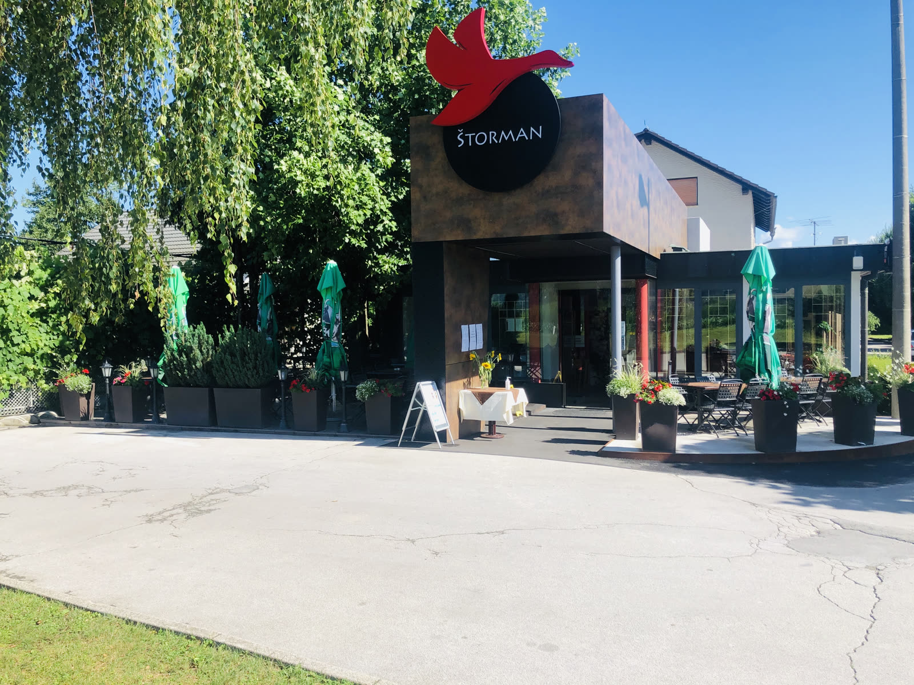
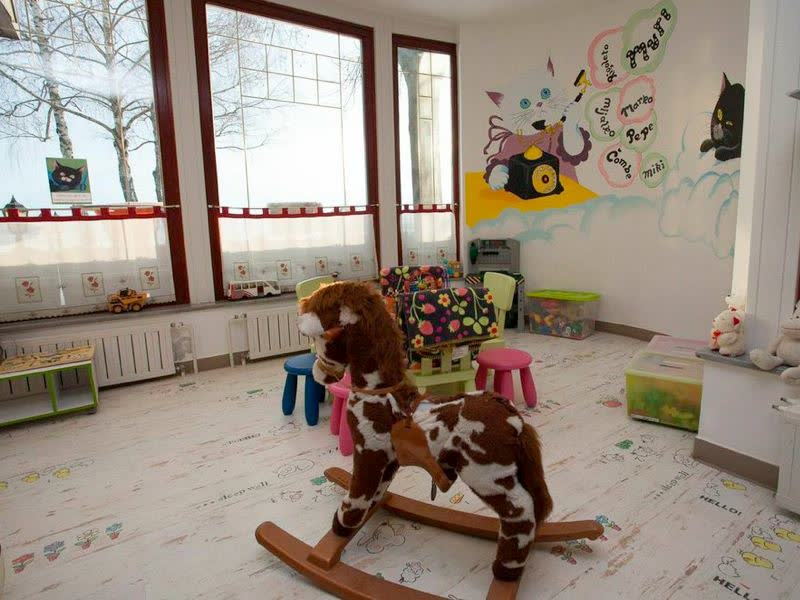
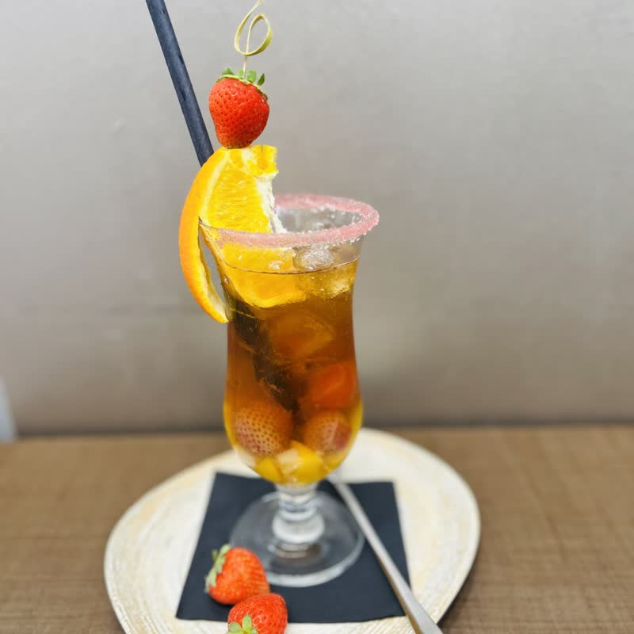
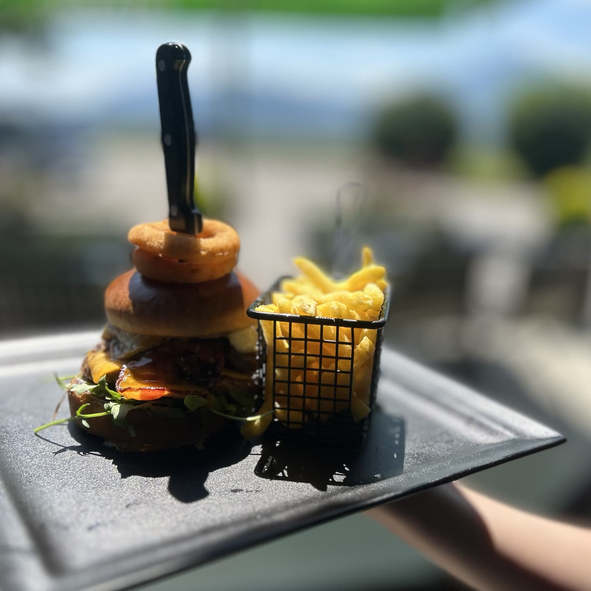
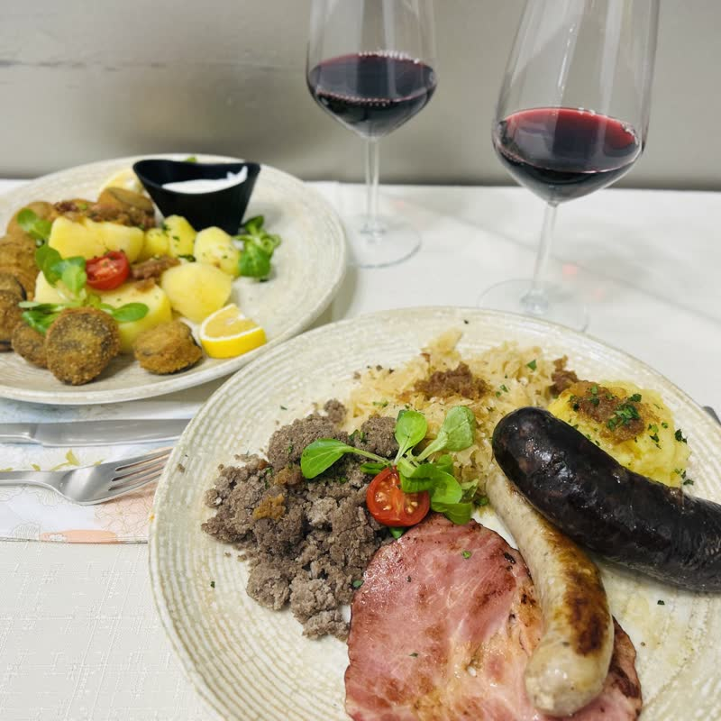
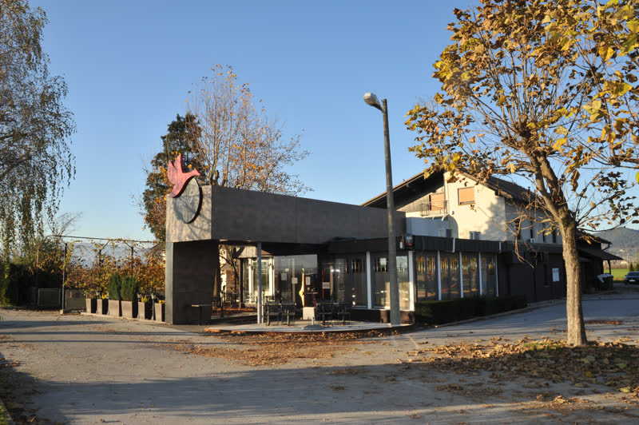

Restavracija Štorman, Šempeter v Savinjski dolini
Malica, kosilo ali praznovanje v dolini hmelja
Gostilna ob Rimski cesti, dva kilometra od avtocestnega izvoza. Po navedbah podjetja se je gostinstvo Štorman začelo poleti 1980, danes pa ponudba sega od toplih dopoldanskih obrokov do slavnostnih menijev in cateringa.
Sobota, nedelja in prazniki 8:00 do 22:00
Po navedbah na storman.si, 21. 11. 2026




Vse fotografije so z njihove obstoječe strani storman.si.
Med tednom
Malice in dnevna kosila
Vsak delovni dan tri dnevne malice in dodatne malice ter dva dnevna menija z juho, glavno jedjo, solato in sladico.

Sobota in nedelja
Kosila za vikend
Trije sestavljeni meniji, objavljeni za vsak vikend posebej. Primer za 21. in 22. 11. 2026, kot je objavljeno na storman.si:

Malice po dnevih
Primer: teden od 16. do 20. 11. 2026, kot objavljeno na storman.si. Na pravi strani se seznam zamenja vsak teden.
- 1Solatni krožnik s tuno, popečenim mladim sirom in kruhkom
- 2Jota s kislim zeljem, sladica
- 3Pečen svinjski hrbet iz pečice v kmečki omaki, kroketi, solata
- 1Rižev narastek z rozinami in jabolki, sadna solata
- 2Safalada na žaru, testeninska solata z zelenjavo, majonezo in jogurtom
- 3Ocvrto izkoščičeno piščančje stegno s semeni, dušen riž, solata
- 1Zelenjavna mineštra s slanino in vodnimi vlivanci, puding
- 2Rižota z gobami, bučo in kraškim pršutom, solata
- 3Goveji medaljon v mediteranski omaki, testenine z drobtinami, solata
- 1Gobovi žlikrofi v kostanjevi omaki, solata
- 2Ričet s klobaso, lešnikov biskvit
- 3Ocvrta pleskavica, polnjena s šunko in sirom, pomfri, solata
- 1Gobov kanelon s sirom na solatnem krožniku, tatarska omaka
- 2Široki rezanci z morskimi sadeži, solata
- 3Svinjski medaljon v gobovi omaki, štruklji z drobtinami, solata
Jedilni list
Po naročilu, z oznako "S tradicijo"
Izbor jedi, kot so zapisane na njihovem jedilnem listu. Jedi iz začetkov nosijo oznako "S tradicijo", tako kot na njihovi karti. Cene na predogledu niso navedene.
Predjedi in juhe
- Hišni trojčekkraški pršut, koktejl rakovih repkov, beli sir
- Hobotnica v solati s češnjevim paradižnikom
- Domača gobova juha v kruhovi skodelici
- Česnova juha z zapečeno gorgonzolo
Tople predjedi in klasika
- Popečeni žlikrofi s kraško panceto in parmezanom
- Kaneloni s tatarsko omakoS tradicijo
- Ciganski golažS tradicijo
- Vampi na tržaški način
Ribe in meso
- Postrv po tržaško
- File kovača z zelenjavnimi trakci
- Beefsteak "Štorman"
- Puranov file "Hawai"S tradicijo
Za družine in skupine
Dežela Mačka Murija
Restavracijo krasijo cvetje, drevje in prostor za otroško igro. Otroški kotiček so malim obiskovalcem uredili tudi v notranjosti, kot pišejo na svoji strani.
- Otroški kotiček znotraj in igrišče zunaj
- Parkirišče in dovolj prostora za avtobus
- Dostop urejen za invalide
- Brezžični internet
- Catering za poroke, jubileje in proslave, po navedbah na njihovi strani

Aktualno
Sezonske ponudbe 2026
Objave iz rubrike Aktualno na njihovi strani. Vsaka dobi svojo podstran.
Valentinovo Pomladna čemaževa ponudba Velikonočni odpiralni čas Mesec špargljevih jedi Poletna ponudba '26 Martinovo: 11. 11. ter 14. in 15. 11. 2026Odkrijte Spodnjo Savinjsko dolino
- Jama Pekel
- Rimska nekropola
- Fontana piva Zeleno zlato
- Ekomuzej hmeljarstva in pivovarstva Slovenije
- Savinova hiša
- Savinjska pivovarna Clef
Kako do nas
Rimska cesta 10, Šempeter
Odpri na zemljevidu (OpenStreetMap)

Kontakt
Veselimo se vašega obiska
Rimska cesta 10, 3311 Šempeter v Savinjski dolini
T: 03 703 83 00, 03 703 83 06
E: info@storman.si